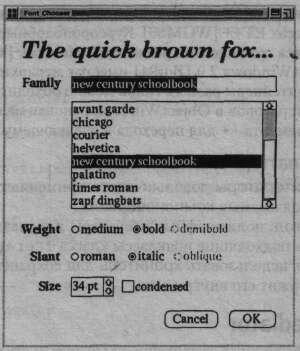
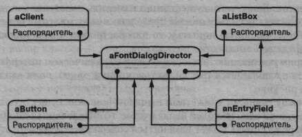
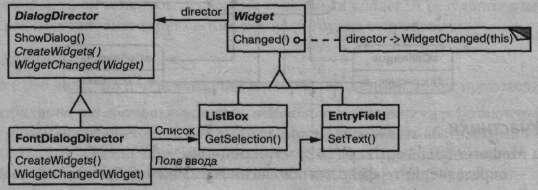
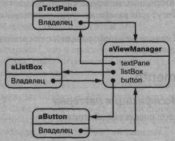

Посредник – паттерн поведения объектов.
Определяет объект, инкапсулирующий способ взаимодействия множества объектов. Посредник обеспечивает слабую связанность системы, избавляя объекты от необходимости явно ссылаться друг на друга и позволяя тем самым независимо изменять взаимодействия между ними.
Объектно-ориентированное проектирование способствует распределению не которого поведения между объектами. Но при этом в получившейся структуре объектов может возникнуть много связей или (в худшем случае) каждому объек ту придется иметь информацию обо всех остальных.
Несмотря на то что разбиение системы на множество объектов в общем случае повышает степень повторного использования, однако изобилие взаимосвязей приводит к обратному эффекту. Если взаимосвязей слишком много, тогда система подобна монолиту и маловероятно, что объект сможет работать без поддержки других объектов. Более того, существенно изменить поведение системы практически невозможно, поскольку оно распределено между многими объектами. Если вы предпримете подобную попытку, то для настройки поведения системы вам придется определять множество подклассов.
Рассмотрим реализацию диалоговых окон в графическом интерфейсе пользователя. Здесь располагается ряд виджетов: кнопки, меню, поля ввода и т.д., как показано на рисунке.
Часто между разными виджетами в диалоговом окне существуют зависимости. Например, если одно из полей ввода пустое, то определенная кнопка недоступна. При выборе из списка может измениться содержимое поля ввода. И наоборот,  ввод текста в некоторое поле может автоматически привести к выбору одного или нескольких элементов списка. Если в поле ввода присутствует какой-то текст, то могут быть активизированы кнопки, позволяющие произвести определенное действие над этим текстом, например изменить либо удалить его.
В разных диалоговых окнах зависимости между виджетами могут быть различными. Поэтому, несмотря на то что во всех окнах встречаются однотипные виджеты, просто взять и повторно использовать готовые классы виджетов не удастся, придется производить настройку с целью учета зависимостей. Индивидуальная настройка каждого виджета – утомительное занятие, ибо участвующих классов слишком много.
Так, класс FontDialogDirector может служить посредником между виджетами в диалоговом окне. Объект этого класса «знает» обо всех виджетах в окне и координирует взаимодействие между ними, то есть выполняет функции центра коммуникаций.
На следующей диаграмме взаимодействий показано, как объекты кооперируются друг с другом, реагируя на изменение выбранного элемента списка.
Последовательность событий, в результате которых информация о выбранном элемента списка передается в поле ввода, следующая:
Обратите внимание на то, как распорядитель осуществляет посредничество между списком и полем ввода. Виджеты общаются друг с другом не напрямую, а через распорядитель. Им вообще не нужно владеть информацией друг о друге, они осведомлены лишь о существовании распорядителя. А коль скоро поведение локализовано в одном классе, то его несложно модифицировать или сделать совершенно другим путем расширения или замены этого класса.
Абстракцию FontDialogDirector можно было бы интегрировать в библиотеку классов так, как показано на рисунке.
DialogDirector — это абстрактный класс, который определяет поведение диалогового окна в целом. Клиенты вызывают его операцию ShowDialog для отображения окна на экране. CreateWidgets - это абстрактная операция для создания виджетов в диалоговом окне. WidgetChanged - еще одна абстрактная операция; с ее помощью виджеты сообщают распорядителю об изменениях. Подклассы DialogDirector замещают операции CreateWidgets (для создания нужных виджетов) и WidgetChanged (для обработки извещений об изменениях).
Используйте паттерн посредник, когда
Коллеги посылают запросы посреднику и получают запросы от него. Посредник реализует кооперативное поведение путем переадресации каждого запроса подходящему коллеге (или нескольким коллегам).
У паттерна посредник есть следующие достоинства и недостатки:
Имейте в виду, что при реализации паттерна посредник может происходить:
Для создания диалогового окна, обсуждавшегося в разделе «Мотивация», воспользуемся классом DialogDirector. Абстрактный класс DialogDirector определяет интерфейс распорядителей:
class DialogDirector { public: virtual -DialogDirector(); virtual void ShowDialogf); virtual void WidgetChanged(Widget*) = 0; protected: DialogDirector(); virtual void CreateWidgets() = 0; };
Widget – это абстрактный базовый класс для всех виджетов. Он располагает информацией о своем распорядителе:
class Widget { public: Widget(DialogDirector*); virtual void Changed(); virtual void HandleMouse(MouseEventk event); // ... private: DialogDirector* _director; };
Changed вызывает операцию распорядителя WidgetChanged. С ее помощью виджеты информируют своего распорядителя о происшедших с ними изменениях:
void Widget::Changed () { _director->WidgetChanged(this),
В подклассах DialogDirector переопределена операция WidgetChanged для воздействия на нужные виджеты. Виджет передает ссылку на самого себя в качестве аргумента WidgetChanged, чтобы распорядитель имел информацию об изменившемся виджете. Подклассы DialogDirector переопределяют исключительно виртуальную функцию CreateWidgets для размещения в диалоговом окне нужных виджетов.
ListBox, Entry-Field и Button – это подклассы Widget для специализированных элементов интерфейса. В классе ListBox есть операция GetSelect ion для получения текущего множества выделенных элементов, а в классе Entry-Field – операция SetText для помещения текста в поле ввода:
class ListBox : public Widget { public: ListBox(DialogDirector*); virtual const char* GetSelectionf); virtual void SetList(List<char*>* listltems); virtual void HandleMouse(MouseEvent& event); // ... }; class EntryField : public Widget { public: EntryField(DialogDirector*); virtual void SetText(const char* text); virtual const char* GetText(); virtual void HandleMouse(MouseEvent& event), // ... };
Операция Changed вызывается при нажатии кнопки Button (простой виджет). Это происходит в операции обработки событий мыши HandleMouse:
class Button : public Widget { public: Button(DialogDirector*); virtual void SetText(const char* text); virtual void HandleMouse(MouseEvent& event); // ... }; void Button::HandleMouse (MouseEvent& event) // ... Changed(); }
Класс FontDialogDirector является посредником между всеми виджетами в диалоговом окне. FontDialogDirector - это подкласс класса DialogDirector:
class FontDialogDirector : public DialogDirector { public: FontDialogDirector(); virtual -FontDialogDirector(); virtual void WidgetChanged(Widget*); protected: virtual void CreateWidgets(); private: Button* _ok; Button* _cancel; ListBox* _fontList; EntryField* _fontNarae; };
FontDialogDirector отслеживает все виджеты, которые ранее поместил в диалоговое окно. Переопределенная в нем операция CreateWidgets создает виджеты и инициализирует ссылки на них:
void FontDialogDirector::CreateWidgets (} { _ok = new Button(this); _cancel = new Button(this); _fontList = new ListBox(this); _fontName = new EntryField(this); // поместить в список названия шрифтов // разместить все виджеты в диалоговом окнеeWidgets();
Операция WidgetChanged обеспечивает правильную совместную работу виджетов:
void FontDialogDirector::WidgetChanged ( Widget* theChangedWidget if (theChangedWidget == _fontList) { _fontName->SetText(_fontList->GetSelection()) } else if (theChangedWidget == _ok) { // изменить шрифт и уничтожить диалоговое окно // ... } else if (theChangedWidget == _cancel) { // уничтожить диалоговое ок } }
Сложность операции WidgetChanged возрастает пропорционально сложности окна диалога. Создание очень больших диалоговых окон нежелательно и по другим причинам, но в других приложениях сложность посредника может свести на нет его преимущества.
И в ЕТ++ [WGM88], и в библиотеке классов THINK С [Sym93b] применяются похожие на нашего распорядителя объекты для осуществления посредничества между виджетами в диалоговых окнах.
Архитектура приложения в Smalltalk/V для Windows основана на структуре посредника [LaL94]. В этой среде приложение состоит из окна Window, которое содержит набор панелей. В библиотеке есть несколько предопределенных объектов-панелей Рапе, например: TextPane, ListBox, Button и т.д. Их можно использовать без подклассов. Разработчик приложения порождает подклассы только от класса ViewManager (диспетчер видов), отвечающего за обмен информацией между панелями. ViewManager - это посредник, каждая панель «знает» своего диспетчера, который считается «владельцем» панели. Панели не ссылаются друг на друга напрямую.
На изображенной диаграмме объектов показан мгновенный снимок работающего приложения.
В Smalltalk/V для обмена информацией между объектами Рапе и ViewManager используется механизм событий. Панель генерирует событие для получения данных от своего посредника или для информирования его о чем-то важном. С каждым событием связан символ (например, #select), который однозначно его идентифицирует. Диспетчер видов регистрирует вместе с панелью селектор метода, который является обработчиком события. Из следующего фрагмента кода видно, как объект ListPane создается внутри подкласса ViewManager и как ViewManager регистрирует обработчик события #select:
self addSubpane: (ListPane new paneName: 'myListPane'; owner: self; when: #select perform: #listSelect:).
При координации сложных обновлений также требуется паттерн посредник. Примером может служить класс ChangeManager, упомянутый в описании паттерна наблюдатель. Этот класс осуществляет посредничество между субъектами и наблюдателями, чтобы не делать лишних обновлений. Когда объект изменяется, он извещает ChangeManager, который координирует обновление и информирует все необходимые объекты.
Аналогичным образом посредник применяется в графических редакторах Unidraw [VL90], где используется класс CSolver, следящий за соблюдением ограничений связанности между коннекторами. Объекты в графических редакторах могут быть визуально соединены между собой различными способами. Коннекторы полезны в приложениях, которые автоматически поддерживают связанность, например в редакторах диаграмм и в системах проектирования электронных схем. Класс CSolver является посредником между коннекторами. Он разрешает ограничения связанности и обновляет позиции коннекторов так, чтобы отразить изменения.
Фасад отличается от посредника тем, что абстрагирует некоторую подсистему объектов для предоставления более удобного интерфейса. Его протокол однонаправленный, то есть объекты фасада направляют запросы классам подсистемы, но не наоборот. Посредник же обеспечивает совместное поведение, которое объекты-коллеги не могут или не «хотят» реализовывать, и его протокол двунаправленный.
Коллеги могут обмениваться информацией с посредником посредством паттерна наблюдатель.